소방설비산업기사(전기) (2017-09-23 기출문제)
1과목: 소방원론
1. 가압식 분말소화기 가압용 가스의 역할로 옳은 것은?
- 분말소화약제의 유동방지
- 분말소화기에 부착된 압력계 작동
- 분말소화약제의 혼화 및 방출
- 분말 소화약제의 응고방지
(정답률: 78%)

2. 피난계획의 일반원칙 중 Fool proof 원칙에 대한 설명으로 옳은 것은?
- 한 가지가 고장이 나도 다른 수단을 이용할 수 있도록 하는 원칙
- 두 방향의 피난동선을 항상 확보하는 원칙
- 피난수단을 이동식 시설로 하는 원칙
- 피난수단을 조작이 간편한 원시적 방법으로 하는 원칙
(정답률: 76%)
3. 수분과 접촉하면 위험하며 경유, 유동파라핀 등과 같은 보호액에 보관하여야 하는 위험물은?
- 과산화수소
- 이황화탄소
- 황
- 칼륨
(정답률: 71%)
4. 다음 불꽃의 색상 중 가장 온도가 높은 것은?
- 암적색
- 적색
- 휘백색
- 휘적색
(정답률: 88%)
5. 장기간 방치하면 습기, 고온 등에 의해 분해가 촉진되고, 분해열이 축적되면 자연발화 위험성이 있는 것은?
- 셀룰로이드
- 질산나트륨
- 과망간산칼륨
- 과염소산
(정답률: 81%)
6. 다음 중 오존파괴지수(ODP)가 가장 큰 할로겐 화합물 소화약제는?
- Halon 1211
- Halon 1301
- Halon 2402
- Halon 104
(정답률: 79%)
7. 유류화재 시 분말소화약제와 병용이 가능하여 빠른 소화효과와 재 착화 방지 효과를 기대할 수 있는 소화약제로 옳은 것은?
- 단백포 소화약제
- 수성막포 소화약제
- 알콜형포 소화약제
- 합성계면활성제포 소화약제
(정답률: 80%)
8. 다음 중 연소할 수 있는 가연물로 볼 수 있는 것은?
- C
- N2
- Ar
- CO2
(정답률: 69%)
9. 고체연료의 연소형태를 구분할 때 해당하지 않는 것은?
- 증발연소
- 분해연소
- 표면연소
- 예혼합연소
(정답률: 84%)
10. 화재 시 연소물에 대한 공기공급을 차단하여 소화하는 방법은?
- 냉각소화
- 부촉매소화
- 제거소화
- 질식소화
(정답률: 88%)
11. 다음 중 인화점이 가장 낮은 물질은?
- 산화프로필렌
- 이황화탄소
- 아세틸렌
- 디에틸에테르
(정답률: 53%)
12. 화재 시 이산화탄소를 사용하여 질식소화 하는 경우, 산소의 농도를 14vol.%까지 낮추려면 공기 중의 이산화탄소 농도는 약 몇 vol.%가 되어야 하는가?
- 22.3vol.%
- 33.3vol.%
- 44.3vol.%
- 55.3vol.%
(정답률: 65%)
13. 독성이 매우 강한 가스로서 석유제품이나 유지등이 연소할 때 발생되는 것은?
- 포스겐
- 시안화수소
- 아크롤레인
- 아황산가스
(정답률: 50%)
14. 물과 반응하여 가연성인 아세틸렌 가스를 발생시키는 것은?
- 칼슘
- 아세톤
- 마그네슘
- 탄화칼슘
(정답률: 75%)
15. 100℃를 기준으로 액체상태의 물이 기화할 경우 체적이 약 1700배 정도 늘어난다. 이러한 체적팽창으로 인하여 기대할 수 있는 가장 큰 소화효과는?
- 촉매효과
- 질식효과
- 제거효과
- 억제효과
(정답률: 76%)
16. 프로판 가스 44g 을 공기 중에 완전연소 시킬 때 표준상태를 기준으로 약 몇 L의 공기가 필요한가? (단, 가연가스를 이상기체로 보며, 공기는 질소 80%와 산소 20%로 구성되어 있다.)
- 112
- 224
- 448
- 560
(정답률: 44%)
17. 청정소화약제인 HCFC-124 의 화학식은?
- CHF3
- CF3CHFCF3
- CHCIFCF3
- C4H10
(정답률: 66%)
18. 벤젠에 대한 설명으로 옳은 것은?
- 방향족 화합물로 적색 액체이다.
- 고체상태에서도 가연성 증기를 발생할 수 있다.
- 인화점은 약 14℃이다.
- 화재 시 CO2 는 사용불가이며 주수에 의한 소화가 효과적이다.
(정답률: 65%)
19. 분말소화약제에 사용되는 제 1인산암모늄의 열분해 시 생성되지 않는 것은?
- CO2
- H2O
- NH3
- HPO3
(정답률: 69%)
20. PVC가 공기 중에서 연소할 때 발생되는 자극성의 유독성 가스는?
- 염화수소
- 아황산가스
- 질소가스
- 암모니아
(정답률: 59%)
2과목: 소방전기회로
21. 그림과 같은 회로에서 a-b간의 합성저항은 몇 Ω 인가?
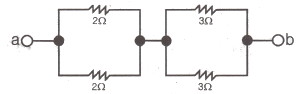
- 2.5
- 5
- 7.5
- 10
(정답률: 74%)
22. 어떤 계를 표시하는 미분 방정식이
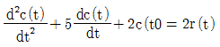
이다. 입력이 r(t)출력이c(t)라고하면 이 계의 전달함수 G(s)는?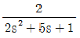
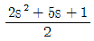
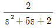
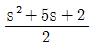
(정답률: 59%)
23. 연속형 조절기가 아닌 것은?
- 비례 동작 조절기
- 비례 미분 동작 조절기
- 비례 적분 동작 조절기
- 2위치 동작 조절기
(정답률: 82%)
24. 다음 그림과 같은 다이오드 게이트회로에서 출력전압은 약 몇 V 인가? (단, 다이오드내의 전압강하는 무시한다.)
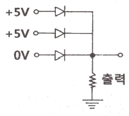
- 0
- 5
- 10
- 20
(정답률: 74%)
25. 다음 회로에서 스위치를 닫은 후 커패시터에 충전이 완료되었을 경우 a, b사이의 전압은 몇 V 인가?
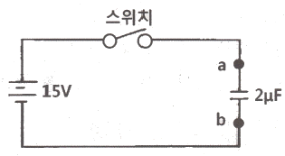
- 2
- 5
- 10
- 15
(정답률: 72%)
26. 자기인덕턴스 L1,L2가 각각 4mH, 9mH 인 코일이 이상적인 결합이 되었다면 상호인덕턴스 M은 몇 mH 인가? (단, 결합계수 K=1 이다.)
- 4
- 6
- 9
- 36
(정답률: 67%)
27. 변압기 병렬운전 조건이 아닌 것은?
- 각 변압기의 극성이 일치되어야 한다.
- 각 변압기의 용량이 일치되어야한다.
- 각 변압기의 권수비가 일치되어야 한다.
- 각 변압기의 1∙2차 정격전압이 일치 되어야 한다.
(정답률: 63%)
28. 교류회로에서 8Ω의 저항과 6Ω의 유도 리액턴스가 병렬로 연결되었다. 이 경우 역률은?
- 0.4
- 0.5
- 0.6
- 0.8
(정답률: 57%)
29. 조작량은 제어요소가 무엇에 주는 양을 말하는가?
- 조작대상
- 제어대상
- 측정대상
- 입력대상
(정답률: 70%)
30. 3kV로 충전된 2μF의 콘덴서와 같은 에너지를 2kV로 얻으려면 몇 μF 의 정전용량이 필요한가?
- 2.5
- 3.5
- 4.5
- 6.5
(정답률: 55%)
31. 그림과 같은 캠벨브리지 회로에서 전류 I2가 0이 되기 위한 C의 값은?
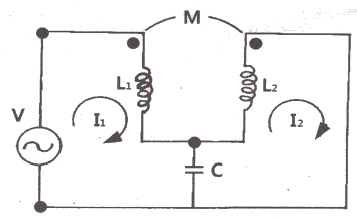
- wL
- w2L
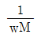
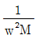
(정답률: 54%)
32. 250 mH의 코일에 전류가 매초 3A 변화했을 때 이 코일에 유도되는 기전력은 몇 V 인가?
- 0.75
- 0.50
- 0.25
- 0.15
(정답률: 66%)
33. 부하의 전압과 전류를 측정할 때 부하에 대하여 전압계와 전류계를 연결하는 방법으로 옳은 것은?
- 전압계는 병렬연결, 전류계는 직렬연결 한다.
- 전압계는 직렬연결, 전류계는 병렬연결 한다.
- 전압계와 전류계는 모두 직렬연결 한다.
- 전압계와 전류계는 모두 병렬연결 한다.
(정답률: 81%)
34. 다음 논리회로의 명칭은 ?
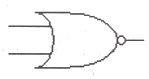
- OR 게이트
- AND 게이트
- NOR 게이트
- NOT 게이트
(정답률: 75%)
35. 그림과 같은 유접접회로의 논리식은?
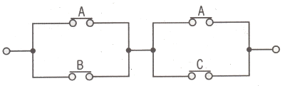
- AB+BC
- AB+C
- A+BC
- B+AC
(정답률: 84%)
36. 용량 1kVA, 3000/200V 의 단상 변압기를 단권 변압기로 결선해서 3000/200V 의 승압기로 사용할 때 부하용량 kVA는?
- 1
- 2
- 15
- 16
(정답률: 36%)
37. 액체식 압력계의 종류가 아닌 것은?
- 액주식 압력계
- 침종식 압력계
- 환상식 압력계
- 다이어프램식 압력계
(정답률: 75%)
38. 트랜지스터를 증폭작용에 이용할 때 베이스-이미터간의 바이어스 전압은?
- 순방향 전압을 인가한다.
- 역방향 전압을 인가한다.
- 순방향, 역방향 어느 것이나 관계 없다.
- 이미터와 컬렉터를 단락시킨다.
(정답률: 53%)
39. 실리콘 정류기 특징으로 틀린 것은?
- 역방향 전압이 크다.
- 허용온도가 높다.
- 전류밀도가 크다.
- 전압강하가 크다.
(정답률: 59%)
40. 전기식 조작 기기의 특징으로 틀린 것은?
- 속응성이 빠르다.
- 장거리 전송이 가능하다.
- 부피, 무게에 대한 출력이 작다.
- 적응성이 넓고, 특성의 변경이 쉽다.
(정답률: 42%)
3과목: 소방관계법규
41. 위험물안전관리법령상 관계인이 예방규정을 정하여야 하는 위험물을 취급하는 제조소의 지정수량 기준으로 옳은 것은?
- 지정수량의 10배 이상
- 지정수량의 100배 이상
- 지정수량의 150배 이상
- 지정수량의 200배 이상
(정답률: 68%)
42. 소방시설공사업법령상 하자보수 대상 소방시설과 하자보수 보증기간 중 옳은 것은?
- 유도표지 : 1년
- 자동화재탐지설비 : 2년
- 물분무등소화설비 : 2년
- 자동소화장치 : 3년
(정답률: 63%)
43. 화재예방, 소방시설 설치∙유지 및 안전관리에 관한 법령상 특정소방대상물에 설치되는 소방시설 중 소방본부장 또는 소방서장의 건축허가등의 동의대상에서 제외되는 것이 아닌 것은? (단, 설치되는 소방시설이 화제안전기준에 적합한 경우 그 특정소방대상물이다.)
- 인공소생기
- 유도표지
- 누전경보기
- 비상조명등
(정답률: 53%)
44. 소방기본법령상 동원된 소방력의 운용과 관련하여 필요한 사항을 정하는 자는? (단, 동원된 소방력의 소방활동 수행과정에서 발생하는 경비 및 동원된 민간 소방인력이 소방활동을 수행하다가 사망하거나 부상을 입은 경우의 사항은 제외한다.)
- 대통령
- 시∙도지사
- 소방청장
- 행정안전부장관
(정답률: 60%)
45. 화재예방, 소방시설 설치∙유지 및 안전관리에 관한 법률상 주택의 소유자가 설치하여야 하는 소방시설의 설치대상으로 틀린 것은?
- 다세대주택
- 다가구주택
- 아파트
- 연립주택
(정답률: 76%)
46. 소방기본법상 타고 남은 불 또는 화기가 있을 우려가 있는 재의 처리 명령에 정당한 사유없이 따르지 아니하거나 이를 방해한 자에 대한 벌칙기준으로 옳은 것은?
- 300만원 이하의 벌금
- 200만원 이하의 벌금
- 100만원 이하의 벌금
- 50만원 이하의 벌금
(정답률: 45%)
47. 소방기본법령상 소방용수시설을 주거 지역∙상업지역 및 공업지역에 설치하는 경우 소방대상물과의 수평거리는 몇 m 이하가 되도록 하여야 하는가?
- 100
- 140
- 150
- 200
(정답률: 65%)
48. 위험물안전관리법령상 정기검사를 받아야 하는 특정옥외탱크저장소의 관계인은 특정옥외탱크저장소의 설치허가에 따른 완공검사필증을 발급받은 날부터 몇 년 이내에 정기검사를 받아야 하는가?
- 12
- 11
- 10
- 9
(정답률: 54%)
49. 화재예방, 소방시설 설치∙유지 및 안전관리에 관한 법령상 특정소방대상물의 관계인이 소방안전관리자를 30일 이내에 선임하여야 하는 기준일 중 틀린 것은?
- 신축으로 해당 특정소방대상물의 소방안전관리자를 신규로 선임하여야 하는 경우 : 해당 특정소방대상물의 완공일
- 특정소방대상물을 양수하여 관계인의 권리를 취득한 경우 : 해당 권리를 취득한 날
- 중축으로 인하여 특정소방대상물이 소방안전관리대상물로 된 경우 : 중축공사의 개시일
- 소방안전관리자를 해임한 경우 : 소방안전 관리자를 해임한 날
(정답률: 59%)
50. 소방기본법령상 특수가연물의 저장 및 취급의 기준 중 맞는 것은? (단, 석탄∙목탄류를 발전용으로 저장하는 경우는 제외한다.)
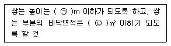
- ㉠ 15, ㉡ 200
- ㉠ 15, ㉡ 300
- ㉠ 10, ㉡ 30
- ㉠ 10, ㉡ 50
(정답률: 45%)
51. 특정소방대상물의 소방시설 설치의 면제기준 중 다음 ( ) 안에 알맞은 것은?
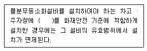
- 옥내소화전설비
- 스프링클러설비
- 간이스프링클러설비
- 청정소화약제소화설비
(정답률: 78%)
52. 점포에서 위험물을 용기에 담아 판매하기 위하여 지정수량의 40배 이하의 위험물을 취급하는 장소의 취급소 구분으로 옳은 것은? (단, 위험물을 제조외의 목적으로 취급하기 위한 장소이다.)
- 이송취급소
- 일반취급소
- 주유취급소
- 판매취급소
(정답률: 77%)
53. 소방용품의 형식승인을 받지 아니하고 소방용품을 제조하거나 수입한 자에 대한 벌칙 기준으로 옳은 것은?
- 3년 이하의 징역 또는 3천만원 이하의 벌금
- 1년 이하의 징역 또는 1천만원 이하의 벌금
- 300만원 이하의 벌금
- 100만원 이하의 벌금
(정답률: 62%)
54. 화재예방, 소방시설 설치 유지 및 안전관리에 관한 법령상 임시소방시설을 설치하여야 하는 공사의 종류와 규모 기준 중 틀린 것은?
- 간이소화장치 : 연면적 3000m2 이상 공사의 작업현장에 설치
- 비상경보장치 : 연면적 400m2 이상 공사의 작업현장에 설치
- 간이피난유도선 : 바닥면적이 100m2 이상인 지하층 또는 무창층의 작업현장에 설치
- 간이소화장치 : 지하층, 무창층 또는 4층 이상의 층 공사의 작업현장에 설치, 이 경우 해당 층의 바닥면적이 600m2 이상인 경우만 해당
(정답률: 48%)
55. 소방청장, 소방본부장 또는 소방서장은 소방특별조사를 하려면 관계인에게 조사대상, 조사기간 및 조사사유 등을 며칠 전에 서면으로 알려야 하는가? (단, 긴급하게 조사할 필요가 있는 경우와 사전에 통지하면 조사목적을 달성할 수 없다고 인정되는 경우는 제외한다.)
- 7
- 10
- 12
- 14
(정답률: 61%)
56. 위험물안전관리법령상 다수의 제조소등을 설치한 자가 1인의 안전관리자를 중복하여 선임할 수 있는 경우 중 다음 ( ) 안에 알맞은 것은?
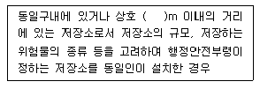
- 50
- 100
- 150
- 200
(정답률: 62%)
57. 소방기본법령상 소방업무 상호 응원협정 체결 시 포함되도록 하여야 하는 사항이 아닌 것은?
- 응원출동의 요청방법
- 응원출동훈련 및 평가
- 응원출동대상지역 및 규모
- 응원출동 시 현장지휘에 관한사항
(정답률: 58%)
58. 소방시설공사업법령상 완공검사를 위한 현장 확인 대상 특정소방대상물의 범위 기준 중 틀린 것은?(관련 규정 개정전 문제로 여기서는 기존 정답인 4번을 누르면 정답 처리됩니다. 자세한 내용은 해설을 참고하세요.)
- 문화 및 집회시설
- 가스계(이산화탄소∙할로겐화합물∙청정소화약제)소화설비 (호스릴소화설비는 제외)가 설치되는 것
- 가연성가스를 제조∙저장 또는 취급하는 시설 중 지상에 노출된 가연성가스탱크의 저장용량 합계가 1000톤 이상인 시설
- 연면적 10000m2 이상이거나 11층 이상인 특정소방대상물 아파트
(정답률: 58%)
59. 소방용수시설 및 지리조사레 대한 기준으로 다음 ( ) 안에 알맞은것은?
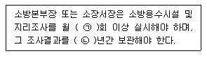
- ㉠ 1, ㉡ 1
- ㉠ 1, ㉡ 2
- ㉠ 2, ㉡ 1
- ㉠ 2, ㉡ 1
(정답률: 83%)
60. 화재예방, 소방시설 설치∙유지 및 안전관리에 관한 법령상 소방특별조사의 항목이 아닌 것은?
- 화재의 예방조치 등에 관한 사항
- 소방시설등의 자체점검 및 정기적 점검 등에 관한 사항
- 공공기관의 소방안전관리 업무 수행에 관한 사항
- 불을 사용하는 설비 등의 관리와 특수가연물의 생산∙품질관리에 관한 사항
(정답률: 56%)
4과목: 소방전기시설의 구조 및 원리
61. 예비전원을 내장하지 아니하는 비상조면등의 비상전원 종류가 아닌 것은?
- 축전지설비
- 자가발전설비
- 비상전원수전설비
- 전기저장장치
(정답률: 45%)
62. 비상방송설비의 축전지설비 설치 기준 중 다음 ( ) 안에 알맞은 것은?
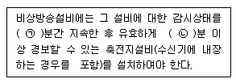
- ㉠ 20, ㉡ 60
- ㉠ 60, ㉡ 20
- ㉠ 10, ㉡ 60
- ㉠ 60, ㉡ 10
(정답률: 68%)
63. 자동화재속보설비 전원전압변동시의 기능 기준 중 다음 ( ) 안에 알맞은 것은?
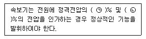
- ㉠ 80, ㉡ 120
- ㉠ 85, ㉡ 115
- ㉠ 90, ㉡ 110
- ㉠ 95, ㉡ 1⑤
(정답률: 80%)
64. 비상콘센트설비 전원회로 배선인 내화배선의 공사방법 중 다음 ( ) 안에 알맞은 것은?
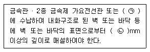
- ㉠ 합성수지관, ㉡ 15
- ㉠ 합성수지관, ㉡ 25
- ㉠ 금속덕트, ㉡ 15
- ㉠ 금속덕트, ㉡ 20
(정답률: 52%)
65. 비상경보설비의 축전지의 구조 중 틀린 것은?
- 접지전극에 직류전류를 통하는 회로방식을 사용하여야 한다.
- 예비전원을 병렬로 접속하는 경우에는 역충잔방지 등의 조치를 하영야 한다.
- 에비전원은 축전지설비용 예비전원과 외부부하 공급용 예비전원을 별도로 설치 하여야 한다.
- 외부에서 쉽게 사람이 접촉할 우려가 있는 충전부는 충분히 보호되어야 하며 정격전압이 60V를 넘고 금속제 외함을 사용하는 경우에는 외함에 접지단자를 설치하여야 한다.
(정답률: 61%)
66. 승강식피난기 및 하향식 피난구용 내림식사다리의 설치 기준 중 틀린 것은?
- 대피실의 출입문은 갑종방화문으로 설치하고, 피난방향에서 식별할 수 있는 위치에 "대피실" 표지판을 부착할 것. 단, 외기와 개방된 장소에는 그러하지 아니 한다.
- 설치경로가 설치층에서 피난층까지 연계될 수 있는 구조로 설치 할것. 단, 건축물 규모가 지상 5층 이하로서 구조 및 설치 여건상 불가피한 경우는 그러하지 아니 한다.
- 대피실의 면적은 2세대 이상일 경우 3m2 이상으로 하고, 건축법 시행령 규정에 적합하여야 하며 하강구(개구부) 규격은 직경 60㎝ 이상일 것. 단, 외기와 개방된 장소에는 그러지 아니 한다.
- 하강구 내측에는 기구의 연결 금속구 등이 있어야 하며 전개된 피난기구는 하강구 수평투영면적 공간 내의 점위를 침범하지 않는 구조이어야 할 것. 단. 직경 60㎝ 크기의 범위를 벗어난 경우이거나, 직하측의 바닥 면으로부터 높이 50㎝ 이하의 범위는 제외한다.
(정답률: 45%)
67. 자동화재탐지설비 배선의 설치기준 중 다음 ( ) 안에 알맞은 것은?
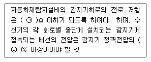
- ㉠ 5, ㉡ 60
- ㉠ 5, ㉡ 80
- ㉠ 50, ㉡ 60
- ㉠ 50, ㉡ 80
(정답률: 68%)
68. 비상벨설비 또는 자동식사이렌설비의 배선 설치기준 중 부속회로 전로와 대지 사이 및 배선 상호간의 절연저항은 1경계구역마자 직류 250V의 절연저항측정기를 사용하여 측정한 절연저항이 몇 MΩ 이상이 되도록 하여야 하는가?
- 0.1
- 0.5
- 1
- 2
(정답률: 70%)
69. 복도통로유도등의 식별도 기준 중 다음 ( ) 안에 알맞은 것은?
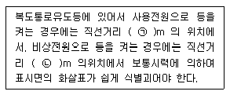
- ㉠ 30, ㉡ 15
- ㉠ 30, ㉡ 10
- ㉠ 20, ㉡ 15
- ㉠ 20, ㉡ 10
(정답률: 43%)
70. 비상콘센트의 설치기준 중 다음 ( )안에 알맞은 것은?
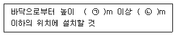
- ㉠ 0.5, ㉡ 1.0
- ㉠ 0.8, ㉡ 1.5
- ㉠ 1.5, ㉡ 2.0
- ㉠ 2.0, ㉡ 2.5
(정답률: 81%)
71. 설치장소별 감지기 적응성 기준 중 부식성 가스가 발생할 우려가 있는 장소인 축전지실에 적응성이 없는 감지기는? (단, 연기감지기를 설치 할 수 없는 경우이다.)
- 불꽃감지기
- 정온식 특종(내산형) 감지기
- 차동식 스포트형 1종 감지기
- 보상식 스포트형 1종(내산형) 감지기
(정답률: 43%)
72. 무선통신보조설비 중 서로 다른 주파수의 합성된 신호를 분리하기 위해서 사용하는 장치는?
- 혼합기
- 분파기
- 증폭기
- 분배기
(정답률: 72%)
73. 자동화재탐지설비의 경계구역 설정기준 중 지하구의 경우 하나의 경계구역의 길이는 몇m 이하로 하여야 하는가? (단, 감지기의 형식승인 시 감지거리, 감지면적등에 대한 성능을 별도로 인정받는 경우는 제외한다.)
- 500
- 600
- 700
- 1000
(정답률: 55%)
74. 발신기는 정격전압에서 정격전류를 흘려 몇 회의 작동 반복시험을 하는 경우 그 구조 기능에 이상이 생기지 아니하여야 하는가?
- 1000
- 1500
- 3000
- 5000
(정답률: 45%)
75. 피난구 유도등을 설치하지 아니하는 경우의 기준으로 틀린 것은?
- 거실 각 부분으로부터 쉽게 도달할 수 있는 출입구
- 거실 각 부분으로부터 하나의 출입구에 이르는 보행거리가 20m 이하이고 비상조면등돠 유도표지가 설치된 거실의 출입구
- 바닥면적이 1000m2 미만인 층으로서 옥내로 부터 직접 지상으로 통하는 출입구(외부의 식별이 용이한 경우)
- 노유자시설∙의료시설∙장례식장의경우 출입구가 3이상 있는 거실로서 그 겨실 각 부분으로부터 30m 이하인 경우에는 주된 출입구 2개소외의 출입구(유도표지가 부착된 출입구)
(정답률: 55%)
76. 감도조정장치를 갖는 누전경보기에 있어서 감도조정장치의 조정범위는 최대치가 몇 A이어랴 하는가?
- 1
- 2
- 15
- 20
(정답률: 61%)
77. 근린생활시설 중 입원실이 있는 의원의 지하층에 적응성을 갖는 피난기구는?
- 피난교
- 구조대
- 피난용트랩
- 다수인피난장비
(정답률: 71%)
78. 소방시설용 비상전원수전설비 큐비클형의 설치기준 중 옥외에 설치된 큐비클형 외함에 노출하여 설치할 수 없는 것은?
- 환기장치
- 전선의 인입구 및 인출구
- 표시등(불연성 또는 난연성재료로 덮개를 설치한 것)
- 계기용 전환스위치(불연성 또는 난연성재료로 제작된 것)
(정답률: 52%)
79. 무선통신보조설비 설치제외 기준 중 다음 ( ) 안에 알맞은 것은?
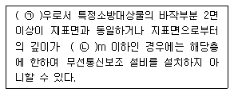
- ㉠ 지하층, ㉡ 1
- ㉠ 지하층, ㉡ 2
- ㉠ 지상층, ㉡ 1
- ㉠ 지상층, ㉡ 2
(정답률: 68%)
80. 정온식 감지선형 감지기의 설치기준으로 옳은 것은?
- 단자부와 마감 고정금구와의 설치간격은 15㎝ 이내로 설치할 것
- 감지선형 감지기의 굴곡반경은 5㎝ 이상으로 할 것
- 감지기와 감지구역 각 부분과의 수평거리가 내화구조의 경우 1종은 3m 이하로 할 것
- 감지기와 감지구역 각 부분과의 수평거리가 내화구조의 경우 2종은 4.5m 이하로 할 것
(정답률: 57%)